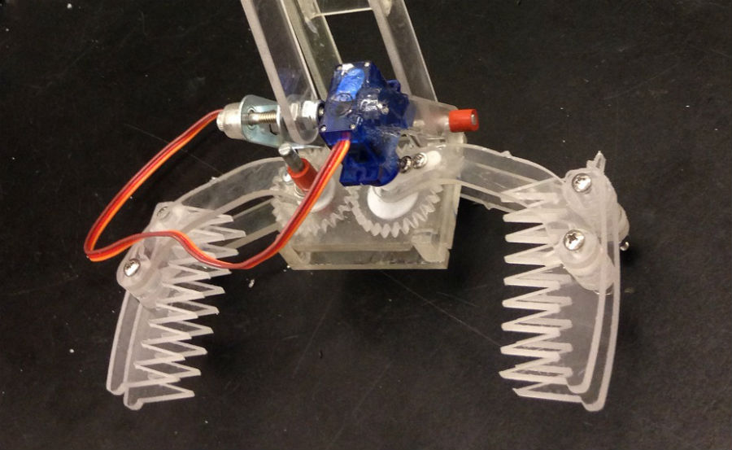
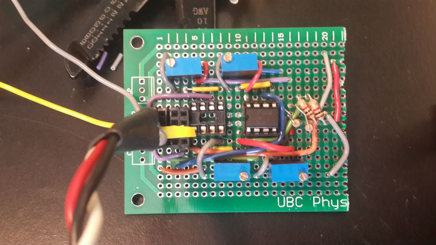

The Claw
A fully autonomous Uber-bot for stuffed animal transportation.
1. Introduction

The Claw is a robot that can navigate a city whose roads are marked with black electrical tape on a white surface using 4 QRD 1114 reflectivity sensors, detect stuffed animal passengers with QSD 1124 infrared sensors, and pick them up with a large claw. The robot receives instructions from a TINAH board running mostly Arduino code. It was created and completed in the summer of second year for the ENPH 253: Introduction to Instrument Design course/competition at UBC by Tara Akhound-Sadegh, Carol Ng, Jamie O'Conniff, and Dylan Whitney.
2. Mechanical design
Jamie and Dylan were responsible for the majority of the robot's mechanical design. All parts were designed in Solidworks and fabricated (in order of most used) with a combination of a waterjet cutter, machine shop/hand tools, 3D printers, and a laser cutter.

Our initial design concept featured storage for passengers holding up to 3 animals (with on in the claw), a fully articulated arm with 2 degrees of freedom on a rotating platform, and a bulk ejection system for quick dropoff of all passengers at the destination area. In order to maximize passenger storage and freedom of arm movement, the robot was to be around 14" tall with a 11" by 11" base, not including the 0.5" thick bumper on all sides to detect collisions with other robots. For the drivetrain, we opted to use two electric motors with one small gear reduction to keep the motor running at its most efficient RPM while keeping our robot moving at the desired target speed. The gears and wheels were both cut from clear polycarbonate on the waterjet cutter.

The final robot features a similarly dimensioned arm which moves with one degree of freedom and three easily accessible vertical shelves for the TINAH board and all associated circuitry, which drastically reduces debugging and startup time. To reduce the likelihood of a collision with the sidewalk when performing U-turns, the shape of the chassis is much more rounded and compact, compared to the original. Since the original bumper design would only fit on straight edges, we opted to replace the protruding bumper with a skirt made of a thin continuous sheet of aluminum.
As there was not enough time to fully dimension every part in Solidworks before fabrication, our approach was to get files ready for the waterjet cutter or laser cutter as quickly as possible, then assemble parts using hand tools and non-permanent fasteners in order to see what works as quickly as possible. The major drawback of this approach was that the prototypes would not look nearly as aesthetically pleasing, and a part's holes or bends would not align as well as a completely CADed part would have.
3. Electrical design
Tara and Carol were responsible for the construction, planning, and testing of all electronic components. Most circuit designs such as Scott's H-bridge can be found on the Engineering Physics Project Lab site, specifically on the ENPH 253 lab pages.
3.1. Tapefinding

For tape following and intersection detection, we chose a system of 4 QRD 1114 sensors connected to a comparator circuit to set a threshold for HI/LO output depending on whether the robot sees tape. A testing system consisting of 4 LEDs was used to improve visual feedback when adjusting the thresholds of each QRD sensor and decrease setup time. Intersection detection was critical to our robot's ability to navigate the map and helped make sure that we didn't fall off the surface when we reached a sharp corner (more in Software). Although we ended up soldering one potentiometer for each sensor, it turned out that the sensors were similar enough that the tuning could have been accomplished using one potentiometer.
3.2 Infrared sensing

To detect passengers both at intersections and on the sidewalk, we soldered a total of 5 infrared sensor circuits: 3 for long range infrared sensing at intersections to determine which path was more likely to contain a passenger, and 2 on either side of the robot to see if a passenger is ready to be picked up. The circuits were made of 5 key components: a DC block, a 100x amplifier, a 1kHz bandpass filter, another amplifier with tunable amplification, and a peak detector.
4 Software
Software was jointly written by Tara and Carol using Arduino. Some PID control algorithms were reused from previous ENPH 253 labs, but other methods were written completely from scratch. You can download the Arduino project we used for the competition right here. (The whole, single file source code will be released soon, I promise.)
4.1 Navigation
The robot's copy of the city's map is very similar to the adjacency matrix of a bidirectional graph, with a few key differences:
- The edge that the robot is travelling along is defined by two nodes:
- the node that the robot is travelling from, represented by the row index
- the node that the robot is travelling to, represented by the column index
- All nonzero entries are replaced by a size 3 array representing the possible nodes the robot could travel to by turning left, right, or going straight ahead at the end of the edge (when an intersection is detected)
By hard coding a copy of the city's map as a lookup table in the robot's software, we were able to implement advanced intersection handling methods and minimize the time needed to return a stuffed animal passenger to the destination. Since the graph is fairly sparse (138/1200 entries are nonzero), we briefly considered using a compression of some sort to avoid reaching the memory limits on the TINAH, but decided against it in favor of decreasing the average computation time per loop.
4.2 Intersection handling
Intersection detection is handled by the two outer tape sensors. When the robot senses that it's at an intersection, it reads its front, long range IR sensors to find the direction (ie. left, right, or straight ahead) of the strongest IR signal, or the highest probability of having a passenger. Because we use the IR sensor data in conjunction with the stored location and map data, we avoid the possibility of camera flashes/autofocuses triggering false positives.
4.3 Passenger pickup

Passenger pickup was taken care of with modular methods for controlling the arm, in addition to experimentally determined positions for pickup and dropoff.
Due to space constrictions, our robot was optimized for pickup on the left side of the sidewalk, so if a passenger was detected on the right, the robot would reverse itself and re-initiate the more advanced position algorithm before attempting to pick it up.
4.4 Tape following

Tape following was accomplished using the PID control algorithms from a previous ENPH 253 lab, with our motors being powered at about 50% PWM at cruising speed. Based on the output of the two tapefinding sensors, the robot senses its position on the tape, and corrects its position by adjusting the speed of the two drive wheels independently.
4.5 Collision detection
For our robot to qualify for the competition, we were required to install a bumper and collision detection system that would respond to a collision within 2 seconds. Using digital output pins on the TINAH, we were able to detect collisions on all sides except for the back of the robot, and turn on a dime immediately to avoid further altercations with the obstacle/rival robot. In order to maintain knowledge of our location on the map, we would reverse our previous/next nodes and continue to look for passengers or find an alternative route to the dropoff point.
5 Performance

In a controlled testing circuit, the Claw was able to stop accurately for passengers almost 100% of the time, pick up the passengers some of the time (sometimes the actual claw would push them out), and reliably navigate the course without getting lost, even when handling collisions. However, on the competition surface, our robot suffered from IR blindness due to loose female headers that connected our IR circuit to our power distribution circuit, causing it to drive right by some passengers, and run in circles around one of the city blocks, since the floating inputs of the IR sensors were pulled up internally by the TINAH. All in all, the whole month-long ordeal was a great learning experience.